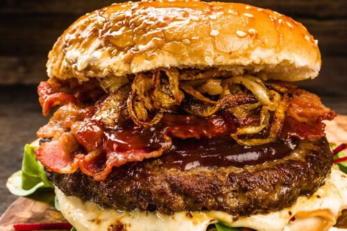

Hamburguesa BBQ

La hamburguesa BBQ es una versión intensa y ahumada de la hamburguesa clásica. Combina carne jugosa a la parrilla con salsa barbacoa, queso cheddar derretido y cebolla caramelizada, logrando un sabor dulce, salado y ahumado en cada bocado. Es ideal para quienes buscan un sabor más fuerte y gourmet.